地政学
テグシガルパは中米の内陸高地にある首都です。米国との移民、治安協力、援助、貿易、気候災害、国境を越える物流が政治課題になり、谷の官庁街が地域の不安定さと国際関係を受け止めます。選挙も街を動かします。
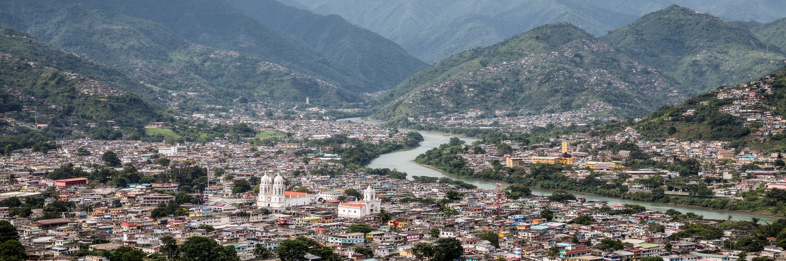
🇭🇳 ホンジュラス / 中米高地 / World City Atlas
チョルテカ川沿いの山間盆地に、政府、商業、大学、移民の家族、丘陵住宅地、信仰、治安課題、古い鉱山町の記憶が重なるホンジュラスの首都です。
都市の骨格
テグシガルパは、チョルテカ川を挟んでコマヤグエラと一体になったDistrito Centralの中核です。急な斜面、谷底の交通、官庁街、市場、大学、教会、郊外化が近い距離で絡み合います。
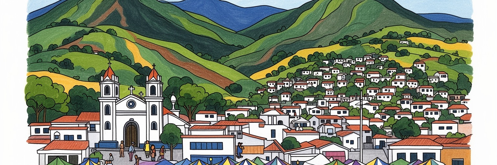
テグシガルパは中米の内陸高地にある首都です。米国との移民、治安協力、援助、貿易、気候災害、国境を越える物流が政治課題になり、谷の官庁街が地域の不安定さと国際関係を受け止めます。選挙も街を動かします。
雇用は行政、教育、医療、建設、小売、金融、交通、飲食、通信に広がります。郊外の工場地帯や北部の輸出産業とも結びつき、送金が家計を支えます。不安定な仕事と若者の職業訓練が論点です。物価も家計に響きます。
旧市街の教会、国立劇場、大学、サッカー、食堂、屋台、カトリックと福音派の礼拝が都市文化を作ります。スヤパの聖母への巡礼は、首都圏を全国の信仰と結びます。山の盆地に家族の記憶が重なります。歌にも響きます。
観光客は旧市街、国立美術館、スヤパ聖堂、ピカチョの丘、市場を訪れます。住民には渋滞、斜面住宅、治安、洪水、雇用、水道、家族の国外移住が日常です。美しい山の景色と生活の重さが同居します。夕暮れは格別です。
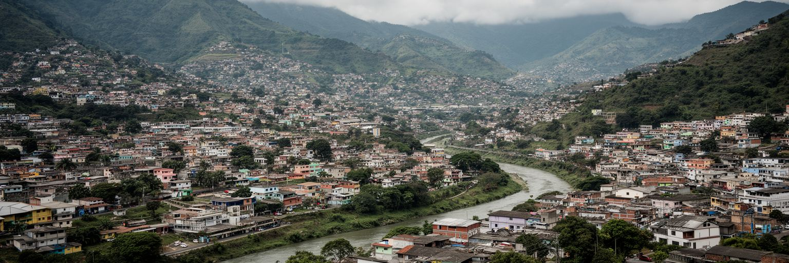
テグシガルパは、海岸の平野ではなく、山に囲まれた高地の盆地に広がる首都です。市街地はチョルテカ川と支流の谷、急な斜面、尾根、旧鉱山町の中心部、コマヤグエラ側の交通結節点を重ねながら成長してきました。平坦な土地が限られるため、道路は谷に集中し、住宅地は丘へ伸び、雨が降ると斜面崩壊や浸水の危険が高まります。眺望のよい丘は都市の魅力ですが、同時に水道、排水、バス、救急、学校へのアクセスを難しくします。都市を上から見ると、赤い屋根や白い教会、緑の山並みが美しく見えますが、実際の生活は坂道、渋滞、未舗装路、雨季の移動、土地権利の不安と結びついています。盆地という地形は、空気の滞留や交通混雑にも影響します。中心部を通る幹線に車が集まると、通勤時間は長くなり、低所得の住民ほど移動の負担を負いやすくなります。テグシガルパを読むには、首都機能だけではなく、山と谷が公共サービスの届き方をどう変えるかを見る必要があります。地形は都市の背景ではなく、社会的な格差を増幅する条件です。高地の涼しさや眺めを保ちながら、安全な斜面利用、排水、公共交通、緑地を整えることが、首都の将来を左右します。開発が山へ上がるほど、一本の道路や水道管の費用は重くなります。だから都市計画は景観だけでなく、誰が安全な土地へ住めるのかを問う作業になります。
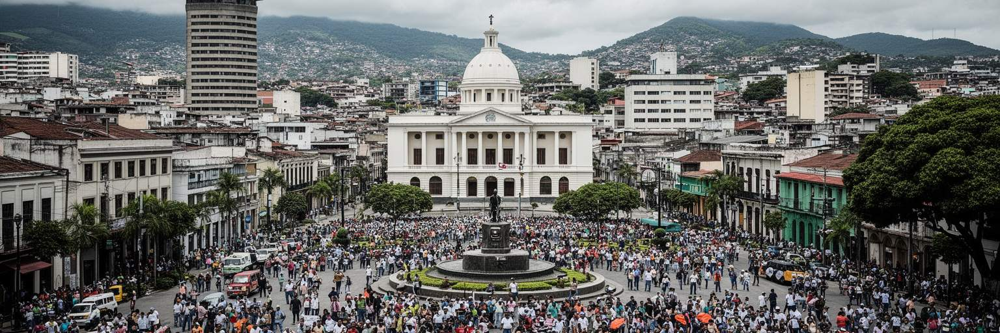
テグシガルパは、ホンジュラスの国家機関が集中する政治都市です。大統領府、国会、最高裁、各省庁、大使館、国立大学、新聞社、ラジオ局、市民団体が首都圏に集まり、選挙、司法、治安、財政、教育、社会政策をめぐる議論が日常的に起こります。中米の小国首都として、国内政治は米国との関係、移民、麻薬取引対策、援助、台湾や中国をめぐる外交、隣国との物流にも深く関わります。街の広場や官庁前は、式典だけでなく抗議、労働争議、選挙運動、追悼の場にもなります。政治の不信が強まる時、道路封鎖やデモはすぐに通勤、学校、商店へ影響します。首都が山間盆地にあるため、重要な道路が限られ、政治的な緊張は都市交通にも現れやすいです。テグシガルパの政治性は、壮大な官庁街よりも、生活に近い距離で制度が見える点にあります。公務員、警察、教師、医療従事者、学生、露店商、運転手が同じ道路を使い、政策の結果を日々感じます。国家の課題は貧困、治安、教育、雇用、汚職防止、防災、地方格差に及びます。首都の役割はそれらを単に発表することではなく、住民が信頼できる形で実行へ変えることです。谷の中で交わされる政治の言葉は、ラジオの討論やSNSの短い動画を通じ、国外に暮らす家族からの送金や地方の農村の暮らしにもつながっています。制度への信頼が弱い時ほど、窓口の対応、予算の透明性、警察の振る舞いが大きな意味を持ちます。首都の政治は、遠い権力ではなく生活の手触りです。
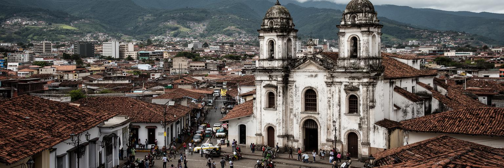
テグシガルパの起源には、植民地期の鉱山町としての歴史があります。周辺の銀鉱や山地資源は、スペイン支配の経済に組み込まれ、教会、広場、行政、交易路をこの谷へ呼び込みました。現在の首都を歩くと、近代的な官庁や商業施設の背後に、鉱山町から地方都市、そして首都へ変わった時間の層が残ります。旧市街の教会、石畳、古い住宅、国立劇場、博物館は、国の制度が整う前から人が集まっていた場所の記憶を示します。ホンジュラスの首都は一時コマヤグアにありましたが、十九世紀後半にテグシガルパへ移され、政治と経済の重心がこの盆地に定まりました。鉱山の富は都市形成を支えた一方、植民地支配、先住民や混血住民の労働、土地の不平等とも切り離せません。都市史を美しい旧市街の物語だけで語ると、資源採掘と労働の重さが見えなくなります。今日のテグシガルパでも、資源、移民労働、非公式経済、公共事業が都市を動かしています。過去の鉱山町は、現在の首都がどう労働を評価し、歴史を保存し、不平等を減らすかを考える手がかりです。古い教会の鐘や広場の影は、国家の記憶を柔らかく見せますが、その下には働いた人びとの痕跡があります。都市の成り立ちを知ることは、現在の街路に残る力の偏りを読むことでもあります。修復された建物を歩く時には、石材や木材を運んだ人、鉱山へ向かった人、商いを支えた女性の姿も想像したいです。
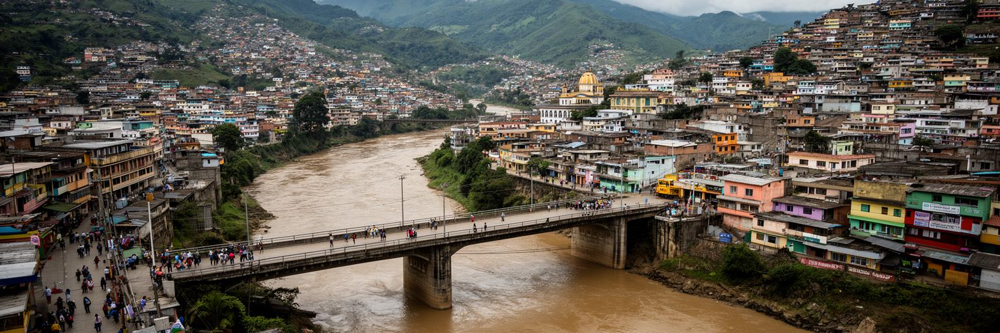
チョルテカ川は、テグシガルパとコマヤグエラを分ける境界であり、同時に結びつける軸です。橋を渡る日常の移動、谷底の市場、バスターミナル、行政施設、住宅地は、川の存在を前提に動いています。しかし雨季になると、川と支流は都市の弱さを露出させます。ハリケーンや豪雨は斜面崩壊、浸水、橋の損傷、道路寸断を引き起こし、貧しい斜面住宅や川沿いの地区ほど危険を負いやすいです。過去の大災害は首都の記憶に深く残り、防災は単なる技術論ではなく、社会政策でもあります。排水路の清掃、危険地の移転、早期警報、避難所、橋の耐久性、都市緑地、廃棄物管理は、住民の命と仕事を守ります。川は景観として整えれば公共空間になり得ますが、汚染や不法投棄が進むと健康と都市イメージを損ないます。テグシガルパの川を読む時、観光的な水辺よりも、雨の日に誰が危険な土地へ残らざるを得ないのかを見る必要があります。地形の制約と所得格差が重なるため、防災の失敗は平等に被害を与えるわけではありません。チョルテカ川は、首都の交通、記憶、環境、貧困、行政能力を一つに映します。川を恐れるだけでなく、きれいにし、近づきやすくし、安全な土地利用へつなぐことが、谷の都市を強くします。川沿いを公共空間として再生できれば、分断されがちな両岸をつなぐ象徴にもなります。防災は同時に、都市の尊厳を回復する作業です。
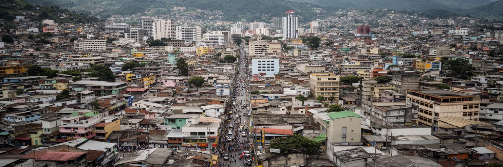
テグシガルパの経済は、首都機能と日常商業が強く結びついています。公務、教育、医療、銀行、通信、建設、小売、飲食、交通、警備、清掃、修理、露店、宅配が都市の雇用を作ります。北部の工業都市や港湾ほど輸出製造の比重は大きくありませんが、国の制度と消費が集まるため、企業本部、専門職、大学、病院、行政サービスが重要です。多くの家庭にとって、国外に住む親族からの送金は家計を支える現実的な収入です。送金は住宅改修、学費、医療、食料、起業資金に使われ、街の小売や建設にも流れます。一方で、送金への依存は国内の雇用不足や若者の移住圧力を映しています。非公式労働が多い都市では、社会保障、最低賃金、安全な職場、女性の働き方、通勤費が大きな論点です。コマヤグエラの市場、露店街、ショッピングモール、携帯修理店は、所得の違う住民の買い物を受け止めます。テグシガルパを経済都市として読むには、GDPだけでなく、家計簿、バス代、学費、薬代、送金窓口、露店の売上を見る必要があります。首都の経済は公式統計の外側にも広がり、日々の小さな取引が暮らしを支えます。働く場所と住む場所が離れるほど、渋滞と時間の負担は重くなります。雇用の質を高めることは、治安や教育の改善ともつながる都市政策です。小さな事業者が税や許可で過度に苦しまないことも重要です。技能を学ぶ機会と信用へのアクセスが広がれば、送金は消費だけでなく地域の投資にも変わります。
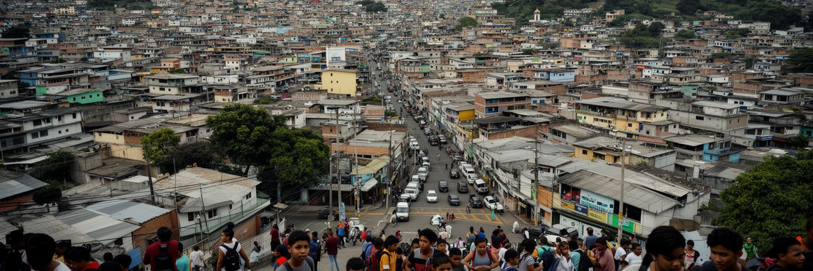
テグシガルパを語る時、治安の問題を避けることはできません。ホンジュラスは長く暴力、組織犯罪、恐喝、麻薬流通、汚職、警察への不信に苦しんできました。首都では地区によって安全の感覚が大きく異なり、夜の移動、バス利用、商店経営、学校帰り、女性や若者の行動範囲に影響します。治安は警察力だけで解ける問題ではありません。失業、貧困、教育の中断、家庭の分離、移民、住宅の過密、公共空間の不足が、若者の選択肢を狭めます。恐喝を受ける小商い、通学路を心配する親、雇用を探す若者、国外へ向かう家族の判断は、都市の日常に深く刻まれています。一方で、学校、教会、オリンピアやモタグアを語るサッカー、夜のライブ音楽、地域団体、職業訓練、女性団体、起業支援は、暴力に対抗する生活の基盤を作ります。テグシガルパの治安を数字だけで見ると、住民の工夫や連帯を見落とします。安全な街とは、警備が多い街ではなく、子どもが歩け、商店が営業でき、若者が仕事や学びへ進める街です。観光客にとっても安全情報は重要ですが、都市を恐怖のイメージだけで固定すると、そこで暮らす人の尊厳を傷つけます。必要なのは、暴力の現実を直視しながら、教育、雇用、公共交通、信頼できる司法へ結びつけて考える視点です。安全は、首都が未来を語るための最も基礎的な都市インフラです。公園や図書館、夜間照明、信頼できる通報窓口のような小さな改善も、若者の選択肢を増やします。
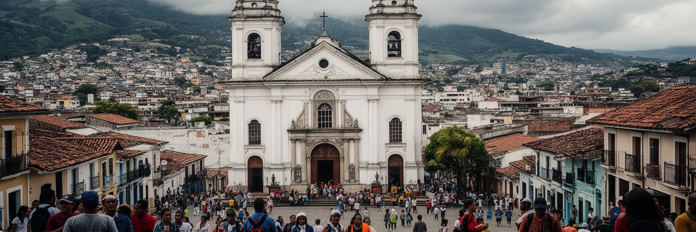
テグシガルパの宗教文化を考える時、スヤパの聖母への信仰は欠かせません。市東部のスヤパ聖堂は、ホンジュラス各地から巡礼者を集め、首都を国家的な祈りの場に変えます。カトリックのミサ、行列、家族の祈願、病気や移住をめぐる願いは、政治や経済とは別の言葉で国の不安を受け止めます。同時に、福音派教会も都市の各地区で強い存在感を持ち、礼拝、音楽、教育、依存症支援、家庭相談、地域活動を通じて住民を支えます。宗教は単なる伝統ではなく、治安不安、貧困、移民で家族が離れる現実の中で、人びとが意味と助けを探す制度です。旧市街の教会やスヤパ聖堂は観光資源にもなりますが、そこを訪れる人の多くにとっては生活の切実な場所です。信仰は都市を結びつける一方、政治的な価値観や社会規範をめぐる議論にも関わります。女性の権利、教育、家族、若者、社会福祉をめぐって、宗教組織の影響は大きいです。テグシガルパを読むには、聖堂の建築だけでなく、巡礼者の移動、露店、寄付、音楽、祈り、地域教会の支援を見る必要があります。スヤパ祭の時期には、ラジオ中継、屋台の油の匂い、子どもの手を引く家族、高齢の巡礼者の休憩が街の時間を変えます。山の盆地に集まる信仰は、全国の地方都市や農村、国外に暮らすホンジュラス人の心ともつながっています。祈りの場所は、国が抱える痛みと希望を静かに映す都市空間です。巡礼の日には交通や商売も変わり、信仰は経済と公共管理の課題にもなります。
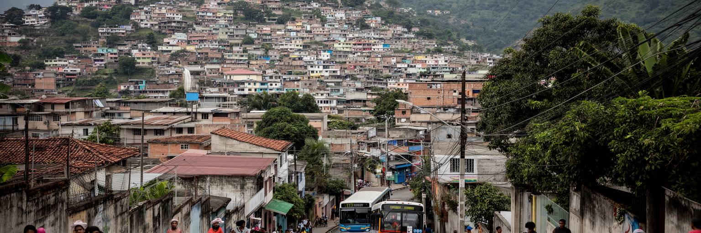
テグシガルパの住宅地は、盆地の中心から丘陵へ大きく広がっています。所得の高い地区にはゲート付き住宅、商業施設、車中心の生活があり、低所得の地区には急な斜面、未舗装路、不安定な土地、限られた水道や排水、遠い通勤が重なります。丘の上からの眺めは美しくても、毎日の生活では坂道が大きな負担になります。子どもが学校へ行く道、高齢者の通院、雨の日の買い物、救急車の到着、ゴミ収集、バス停までの距離が、住む場所で大きく変わります。住宅不足と土地価格の上昇は、危険な斜面や川沿いに住まざるを得ない家族を生みます。家を少しずつ増築し、親族や送金に頼って住まいを整えることは、多くの都市住民の現実です。公的住宅やインフラ整備が追いつかない時、非公式な居住地は都市の外側ではなく、首都の労働力を支える内側になります。斜面生活を課題として見るだけでは、住民の工夫やコミュニティの力を見落とします。しかし災害リスクやサービス不足を放置すれば、不平等は世代を越えて残ります。テグシガルパの住宅政策には、土地の安全性、交通、水、学校、仕事、治安を一体で考える視点が必要です。住まいは屋根の数ではなく、都市の機会へ接続できるかで価値が決まります。坂道の暮らしを支えることは、首都の社会的な土台を強くすることです。水を運ぶ時間やバス停までの坂は、見えにくい家事労働にもなります。女性や高齢者の負担を軽くする視点が、住宅改善を具体的にします。
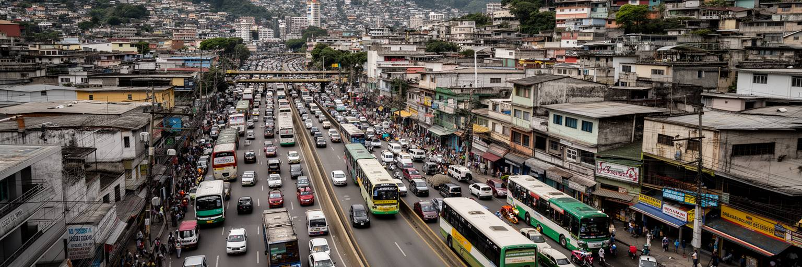
テグシガルパの移動は、地形と都市成長の影響を強く受けます。谷底の道路に車、バス、タクシー、配送、通勤、通学が集中し、朝夕の渋滞は生活時間を大きく削ります。丘陵住宅地から中心部へ向かう道は限られ、雨や事故、デモ、道路工事があると移動全体が乱れます。公共交通は多くの住民に不可欠ですが、混雑、安全性、運行の安定、乗り継ぎ、夜間の不安が論点です。車を持てる世帯と持てない世帯の間で、仕事や教育へのアクセスにも差が出ます。空港機能はかつて市内のトンコンティン空港が象徴的でしたが、国際線の重心はパルメローラ空港へ移り、首都と空港を結ぶ広域交通も重要になりました。都市が郊外へ広がるほど、道路だけで需要を受け止めることは難しくなります。バスの再編、歩道、横断、坂道の安全、駐車管理、公共交通の信頼性、災害時の迂回路が、首都の生産性と生活の質を左右します。テグシガルパを歩くと、短い距離でも高低差や交通量で移動の難しさが分かります。観光客にとっては旧市街やピカチョの丘へ行く手段が負担になり、住民にとっては毎日の職場と学校への往復が重くのしかかります。移動を改善することは、単なる道路整備ではありません。都市の時間を公平に分け直し、若者や女性、高齢者が機会へ近づくための政策です。バス停の照明や歩道の段差解消のような細部も、治安や雇用へのアクセスに直結します。地形の厳しさを前提にした移動設計が求められます。
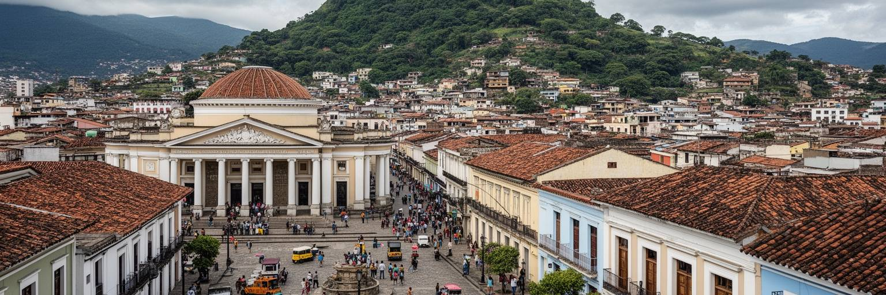
テグシガルパの観光は、海辺のリゾートではなく、高地の首都を歩いて理解する旅です。旧市街には大聖堂、ロス・ドローレス教会、国立劇場、博物館、広場、古い商店があり、ホンジュラスの政治と文化の重なりを見せます。ピカチョの丘からは盆地全体が見渡せ、山に囲まれた都市の形、丘陵住宅地、道路、中心部の密度が一目で分かります。スヤパ聖堂は宗教観光と巡礼の中心であり、単なる見学地ではなく国民的な信仰の場所です。市場や食堂ではバレアーダ、タマル、コーヒー、乳製品、ローカルな会話に触れられます。夜にはガリフナ由来のプンタや中米ポップスがバーや車の音に混じります。一方で、観光の発展には治安情報、歩道、案内、公共交通、夜間の安全、文化施設の維持が欠かせません。訪問者が短時間で通過するだけなら、首都は危険や混雑の印象だけで終わりがちです。地元ガイド、博物館、歴史建築、宗教行事、郊外の自然を結び、住民の生活を尊重する形で見せることが重要です。テグシガルパには、マヤ遺跡やカリブ海岸とは別のホンジュラスの顔があります。それは、国家の制度、移民の家族、山の地形、信仰、労働、若者の課題が一つの盆地に集まる姿です。観光は都市の問題を隠すものではなく、丁寧に理解する入口になり得ます。丘からの夕景が美しいほど、その下で続く暮らしにも目を向ける旅が必要です。文化施設を学校や地域団体と結べば、観光は外から来る人だけのものではなくなります。市民が自分の街を学び直す機会にもなります。
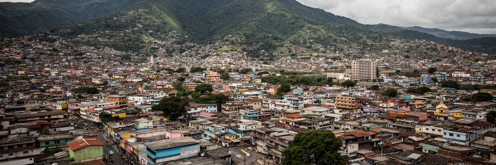
テグシガルパは、世界経済の巨大な金融都市ではありません。それでも、中米の都市を考えるための論点が非常に濃く集まっています。山間盆地の地形、チョルテカ川の災害リスク、首都政治、移民と送金、治安、若者の雇用、宗教、斜面住宅、公共交通、文化施設が、同じ都市空間に重なります。街を単に危険な首都として見ると、そこで働き、学び、祈り、家族を支える人びとの現実を見落とします。逆に、美しい山の景観だけを見ても、斜面の不安、渋滞、非公式労働、国外へ向かう家族の痛みは見えません。テグシガルパの世界性は、人口規模ではなく、国境を越える移民、米国との関係、気候災害、治安政策、送金、宗教、若者の将来が街角へ直接届くことにあります。首都としての課題は、官庁の制度を住民の生活改善へ変えられるかです。排水を整え、学校と職業訓練を強くし、公共交通を安全にし、斜面住宅を支え、歴史地区を守り、若者が市内で未来を描けるなら、山の盆地は国の希望を受け止められます。テグシガルパを読むことは、脆さを抱える首都がどう信頼を作り直すかを見ることです。夕暮れの丘、教会の鐘、渋滞する道路、送金窓口、市場の声、雨季の湿った土の匂い、スタジアムの歓声は、ホンジュラスの現在を一つずつ語っています。その声を一つの暗い物語に閉じ込めず、課題と可能性を同時に見ることが大切です。首都の未来は、国外へ出る力だけでなく、市内に残って暮らせる理由を増やせるかにかかっています。